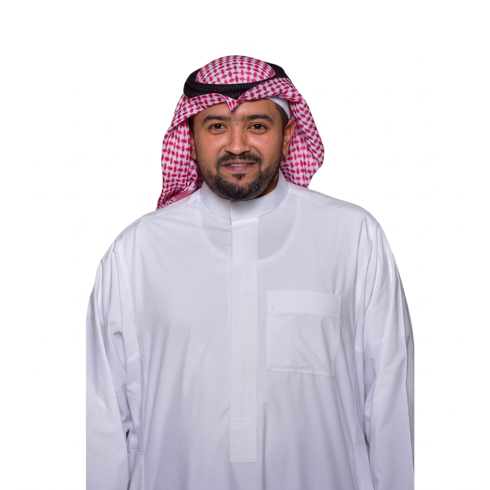

المؤهلات الأكاديمية
- ماجستير مناهج وطرق تدريس الحاسب الآلي — جامعة الملك سعود (2022م، تقدير 4.96 من 5).
- دبلوم تربوي — جامعة جازان (2014م).
- بكالوريوس علوم الحاسب الآلي — جامعة الباحة (2013م).
- دبلوم تحليل وتصميم نظم — جامعة الملك خالد (2005م).

مربٍّ ومختص في مناهج وطرق تدريس الحاسب الآلي وأساسيات الأمن السيبراني وجودة التعليم الإلكتروني، أعمل على تبسيط المفاهيم التقنية وبناء محتوى تفاعلي ومشاريع تطبيقية تمكّن الطلاب والمتدربين.